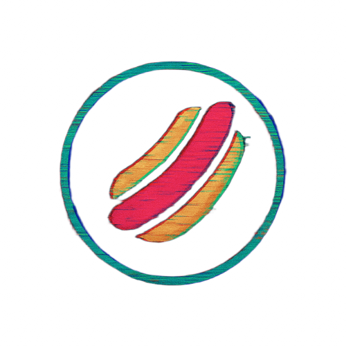

Development
Front-end development, web technologies, CSS, JavaScript, SCSS, and open-source projects.


About me
I build software projects, learn through experimentation, and document questions that interest me through independent research.
What I work on
Front-end development, web technologies, CSS, JavaScript, SCSS, and open-source projects.
Independent research focused on asking clear questions, using transparent methods, and documenting results.
I like learning by building, testing ideas, and turning experiments into reusable projects or documentation.
Current toolkit
The technologies I use most often continue to grow as I work on new projects.
Background
Began learning programming through visual, drag-and-drop coding.
Started experimenting with web technologies such as HTML and CSS.
Put more time into building projects and developing a deeper understanding of web development.
Started giving independent research and written work a dedicated place alongside software projects.
Beyond technology
Outside of coding and research, I enjoy baking and cooking, drawing and sketching, photography, reading novels, gaming, and exploring new projects.